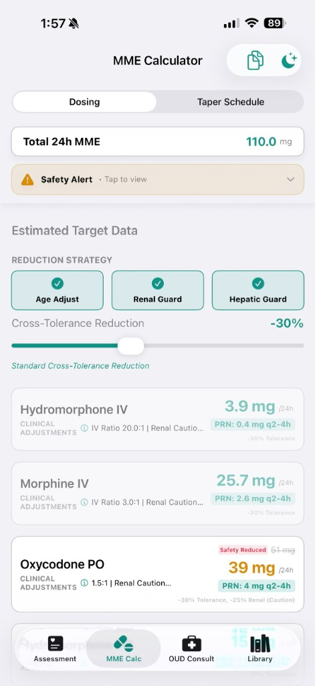
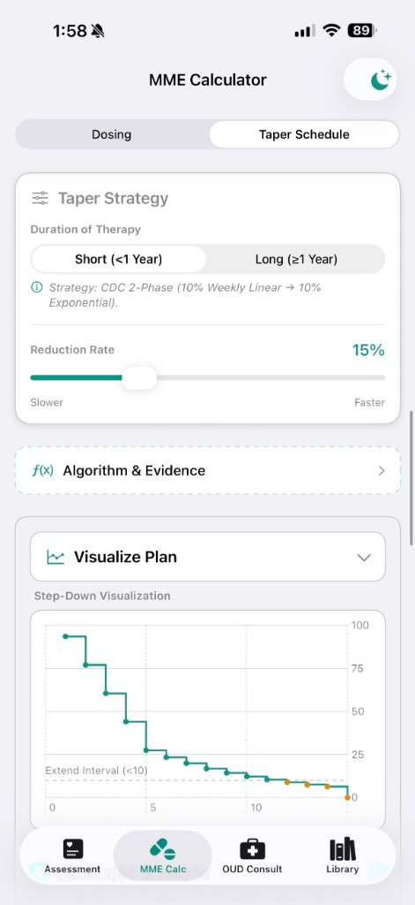

Available Now on iOS
The Algorithm in Your Pocket
The same clinical validation engine that powers our EMR integration is available as a standalone iOS app. Use it at the bedside, in the pharmacy, or during rounds.
MME Conversion Engine
24-drug database with route-aware, organ-adjusted dosing and CDC 2022-validated cross-tolerance reductions.
Automated Risk Scoring
PRODIGY-aligned OIRD scoring with auto-generated monitoring plans and organ-specific safety gating.
OUD Consult Workflows
Integrated screeners (DAST-10, ASSIST-Lite), COWS-based induction protocols, and multimodal sparing options.



Swipe to view more screenshots